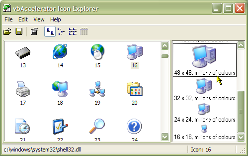
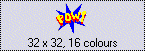

VB5 Icon Extractor Source Code (101K)
VB5 Icon Extractor Source Code (101K)
 VB5 Icon Extractor (48K)
VB5 Icon Extractor (48K)
 VB6 Icon Extractor Source Code (97K)
VB6 Icon Extractor Source Code (97K)
 VB6 Icon Extractor (44K)
VB6 Icon Extractor (44K)
 19 Dec 2002
19 Dec 2002
Icons with Alpha channel (32 bit ARGB) now supported.
Facility to save all icons from the selected executable or DLL at the same time added.
XP Visual Styles now supported.
 Subclassing Without The Crashes
Subclassing Without The Crashes
 IShellFolder Extended Type Library Version 1.2 (ISHF_Ex.Tlb)
IShellFolder Extended Type Library Version 1.2 (ISHF_Ex.Tlb)

Icon Extractor Utility
A serious all VB utility for stealing high quality icons.
This application uses the cFileIcon class I developed to read and write .ICO files and resources to allow you to extract real icons with multiple sizes and colour depths from executables.
The application can load icons either from 32bit executables (.EXE, .DLL, .OCX etc) or directly from .ICO files. When you select an icon, the different sizes and colour depths available in the resource are displayed in the right-hand side list. You can then save all the different sizes out, or you can select one or more individual resource types and save that. The application creates real .ICO files which you can then use to load into a VB ImageList or the vbAccelerator ImageList control and class.
As well as demonstrating the class, it also demonstrates the following in VB:
- Enumerating Resources contained within an executable file using the API EnumResources callback function.
- Creating a new list box-style control in VB code (this is the control on the right hand side of the application in the picture above). This control is starting point for any single column list control you might want to develop yourself and demonstrates using the Scroll Bar Class.
The code is also used in the vbAccelerator Icon Editor package in VB.
Some examples of icons found whilst playing with this code:
Resource ID 307 in MSAccess.exe (Access 97). MS Access' Programmers were clearly hoping to win my "Worst Icons Ever Seen" competition with this one!
This icon from COMDLG32.DLL has the unusual size of 98x30 but still works just fine in my class (try and get the VB StdPicture object to do that!). It is a good example of how useful icons can be when creating pictures on forms.